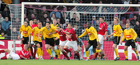

donderdag 28 december:
Vooruitblik AZ - Roda JC
>>>
woensdag 27 december:
Beeldverslag Ajax-Roda JC
>>>
dinsdag 26 december:
Na uitvoerige bestudering van de beelden blijkt dat het eerste doelpunt niet door Van Tornhout maar door Ramzi is gescoord. Beoordeel hier de situatie zelf
>>>
(3,8MB)
dinsdag 26 december:
Naast de gratis glühwein, chocomel, kerstbrood en muziek van Roda was er nòg een gulle gever: sponsor
AEVITAE
verhoogde de feestvreugde door een vat bier te schenken aan de supporters in de Kickoff. Danke !!
maandag 25 december:
Castro (l) eerste doelman, Kujovic (r) gaat Roda JC verlaten
>>>
zondag 24 december:
Roda JC - FC Twente: 2-0
>>>
Nieuwe foto's toegevoegd
zaterdag 23 december:
Rakkers en Rebels
>>>
Vrijdag 22 december:
Roda geïnteresseerd in VVV'er Frank van Kouwen
>>>
Donderdag 21 december:
In het L1 programma "De Aftrap" liet Stevens onder meer weten dat Roda bezig is met het aantrekken van nieuwe spelers
>>>
Woensdag 20 december:
Oefenwedstrijd Royal Charleroi Sporting Club - Roda JC
>>>
Dinsdag 19 december:
Willem Janssen heeft getekend
>>>
Dinsdag 19 december:
In de wedstrijd van jong Roda tegen jong Top Oss heeft Jamaïque Vandamme (l) een zware hersenschudding opgelopen na een botsing met de Ossche keeper.
Maandag 18 december:
Alexander Voigt in belangstelling Kaiserslautern
>>>
Zaterdag 16 december:
Roda JC - Vitesse: 2-4
Fotoverslag eindelijk on-line
>>>
Vrijdag 15 december:
PRIMEUR
: Binnenkort in de fanshop, de nieuwste (carnavaleske) Roda-single van Victor & Friends: "Zoe jeet dat"
>>>
Internet
:
Http://www.koempel.nl
Contact: Klik
hier
Web
koempel.nl
|Foto's|
Video
|
Audio
|
Overige
|
Verslagen
|
Interactief
|
Links
|